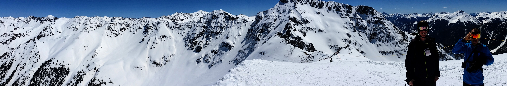

Hey everyone!!! My name is Tim Cutter. I've been called 'TC,' 'Tim,' and 'Cutter. Feel free to choose whichever is easiest to remember. Being a military brat, I bounced around the country (i.e., California, Ohio, Colorado) for a bit but mostly grew up in Colorado Springs. As most people do, I have some qualms about my hometown, yet it is a beautiful place that provided me plenty of opportunities be outside skiing, hiking, and biking.
Continuing with my outdoor interests, I studied Environmental Studies and Geography while leading volunteer trips in college. After graduating, my education led me to two small environmental non-profits. My responsibilites were diverse, from organizing reforestation events and restoring alpine wetlands to organizing high school internships and instructing college courses. The jobs also allowed me flexibility to travel, lead volunteer groups, and help with other research during slower times. Although the jobs had immense perks, I was ready for a change.
Whenever I am not thinking about my drastic shift in carreers and what lies ahead, I try to spend time enjoying the mountains around us. I hike, run, bike, climb, ski, kayak, and frequently break down in my old truck. I cannot say I am at all good at any one of those activities, but I am always looking for people to join. With longer free time, I love to travel. I will go just about anywhere to sample different food, cultures, landscapes, and people.
Galvanize caught my eye a few years ago after a friend attended, survived, and raved about the experience. At the time, I was transitioning in my job so I did not think about changing careers. Flash forward to last summer, I finally decided I wanted to do something different. I only spent a little time to learn a few lines of code, but I immediately knew it was for me. Consequently, last fall I took the plunge. I resigned from my job and signed up for a Galvinize workshop... and here I am a few months later.